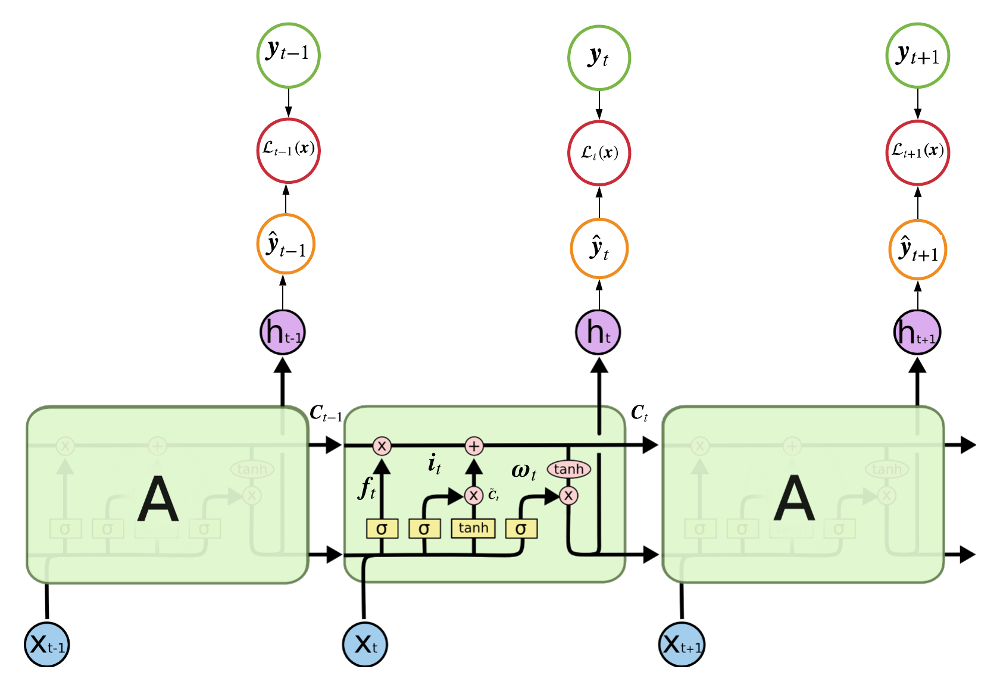

- Last Edited: Sun 28 February 2021
- Angel C. Hernandez
1. Introduction
The Transformer, Attention Is All You Need, has taken the deep learning community by storm over the past three years and has not let up. Its applications ranges from language models like BERT and feature importance selection on tabular data like TabNet. If you strive to stay current on state-of-the-art deep learning models, the Transformer is definitely a network you want to be comfortable with. This post will breakdown each module in the network and hopefully provided sufficient insight on the network's architecture.
2. Recurrent Neural Network Review
We cannot really talk about attention and the Transformer without mentioning its predecessor, Recurrent Neural Networks (RNNs). RNNs are typically your deep model of choice when you are performing supervised learning on sequential data, e.g., you have an input sequence \(\pmb{x} = (\pmb{x}_1, ..., \pmb{x}_T)\) and a corresponding target sequence of the same length, \(\pmb{y} = (y_1, ..., y_T)\) . We will assume a given input is a real-valued vector, \(\pmb{x}_t \in \mathbb{R}^D \) and a given target is a scalar token, \(y_t \in (1, 2,..., K)\). In this setting, we want to learn a network that will minimize the discriminative negative log likelihood: \(-\log P(\pmb{y}|\pmb{x}) = -\sum_{t=1}^T \log P(y_t|\pmb{x}_1, ..., \pmb{x}_t)\). Moving forward, we will briefly review different RNN architectures with hope this is a review to the audience. If not, follow up links which review RNNs in-depth have been provided.
2.1 Vanilla RNN
In the case of a vanilla rnn the model encodes each input, \( \pmb{x}_t\),
into a hidden state, \( \pmb{h}_t\), where the hidden state is a function
of the input and the previous hidden state, i.e., \( \pmb{h}_t = f(\pmb{h}_{t-1}, \pmb{x}_t)\).
The function simply maps \(\pmb{h}_{t-1} \text{ and } \pmb{x}_t\) to a new vector space by applying
a linear combination using the learnable matrices, \(\pmb{W} \text{ and } \pmb{U}\), respectively.
These learnable matrices are shared across all time steps in a given layer, where typically a RNN will have multiple
layers stacked on top of each other and each layer would have its own set of learnable matrices. The output at a given time step
is linear combination of the last hidden state layer passed into the softmax function which generates the model's prediction,
\(\hat{y}_t\). Ultimately, each hidden state is sending information to the next hidden state which encodes
information of all inputs up until that point in time. As a result, the model is using encoded information about
\(\pmb{x}_1, \pmb{x}_2, ..., \pmb{x}_t\) to generate the prediction, \(\hat{y}_t\).
The computational graph of a vanilla RNN can be found in Figure 1.
2.2 Bidirectional RNN
Bidirectional RNNs are similar to standard RNNs, except in a given layer there are hidden states traveling forwards,
\(\overrightarrow{\pmb{h}}_t\), and backwards, \(\overleftarrow{\pmb{h}_t}\).
Each direction has their own set of learnable matrices and a given layer at a given time step effectively encodes information
about the entire input sequence, \(\pmb{x}_1, \pmb{x}_2, ..., \pmb{x}_T\). The computational graph
of a bidirectional rnn can be found in Figure 2.
2.3 LSTM Network
While standard RNNs can be powerful functions approximators, performance suffers on longer sequences due to vanishing/exploding gradients. LSTMs were developed to mitigate this issue and are probably one of the most popular types of RNNs. We begin by defining the following linear combination:
$$ \text{Score}: \pmb{a}_t^j= \pmb{W}^j\pmb{h}_{t-1} + \pmb{U}^j\pmb{x}_{t} + \pmb{b}^j $$
\( j \) is simply the "type" of score where each type of score warrants a different set of parameters: \( \{\pmb{W}^j,\pmb{U}^j,\pmb{b}^j\} \). We can now define the formulas used to calculate the state of a given hidden unit, \( \pmb{h}_t \), within a LSTM:
$$ \begin{aligned} \text{Forget Gate}&: \pmb{f}_t = \sigma(\pmb{a}_t^f) \\ \text{Input Gate}&: \pmb{i}_t = 1-\pmb{f}_t \\ \text{Output Gate}&: \pmb{\omega}_t = \sigma(\pmb{a}_t^\omega) \\ \\ \text{Candidate Values} &: \tilde{\pmb{C}}_t = \text{tanh}({\pmb{a}_t^c}) \\ \text{Cell State} &: \pmb{C}_t = \pmb{f}_t\odot \pmb{C}_{t-1} + \pmb{i}_t\odot\tilde{\pmb{C}}_t \\ \text{Hidden Unit}&: \pmb{h}_{t} = \pmb{\omega}_t\text{tanh}(\pmb{C}_t) \end{aligned} $$
The Cell State encompasses a bulk of the work and is the reason LSTMs can
share and retain information over distant time intervals. In the Cell State we
have the Forget Gate and Input Gate which determine how much
information to utilize from the past and present, respectively. After calculating
the Cell State, the network uses an Output Gate to determine how much information to send to the next time step,
\( \pmb{h}_{t+1} \). All of this is done "internally"
within a given hidden unit and the computational graph is identical to the ones
defined above.

2.4 Sequence to Sequence Model
Now we have the seq2seq model which was introduced by
Sutskever et al. 2014 and is a popular choice when performing
machine translation tasks. The model feeds an input sequence, say a sentence,
into an Encoder network and the network learns to represent the input
as a thought vector; where this thought vector is suppose encode all the information
about the input sequence. Then, the vector is feed into the Decoder network and this network learns
to predict the output sequence, say the most likely reply to the input sequence. The hidden state in the Decoder,
\(\pmb{s}_t\), is a function of the previous ground truth target token,
\(y_{t-1}\) (which acts as the input), and the previous decoder hidden state,
\(\pmb{s}_{t-1}\), i.e., \(\pmb{s}_t = f(y_{t-1}, \pmb{s}_{t-1})\).
At training time you will typically randomly select the ground truth token or the predicted token,
\(\hat{y}_{t-1}\), to be the input to the decoder where this is known as
teacher forcing and was
originally proposed in Bengio et al. 2015.
The Encoder and Decoder networks are RNNs of your choice, e.g. vanilla, bidirectional or LSTM, and a depiction of a seq2seq
model can be found in Figure 4.
While seq2seq models perform great on short input sequences,
Cho et al. 2014 proved performance significantly suffers as the size of the
input sequence grows (see Figure 5). Ultimately, encoding the entire input sequence
into a single thought vector is not adequate to achieve great accuracy on target sequences of longer length.
2.5 Seq2Seq With Attention
Now we get into attention which was first proposed in Bahdanau et al. 2015 and has been one of the most influential deep learning papers published in the last 10 years. Paraphrasing the authors, the use of a fixed-length vector, thought vector, is a bottleneck in improving the performance of seq2seq models and the decoder should be able to (soft-)search parts of the source input that are relevant to predicting a target token at a given time step. Letting \(\pmb{h}_x\) be the set of hidden states in the final layer of the encoder, i.e. \(\pmb{h}_x = (\pmb{h}_1^2, \pmb{h}_2^2..., \pmb{h}_{T_x}^2)\), attention proposes to computer a score, \(e^i_t\), between a given encoder hidden state and the decoder hidden state at a given time step, i.e. \(e^i_t = f(\pmb{h}_i^2, \pmb{s}_t)\). We then apply the softmax function over all computed scores and take a weighted average between the softmax-scores, \(\pmb{\alpha}_t\), and encoder hidden states, \(\pmb{h}_x\), to obtain a context vector, \(\pmb{c}_t\). The context vector is used to generate a prediction at the time step, t, where the decoder's prediction for a given time step is computed as followed:
$$ \begin{aligned} \text{Decoder Hidden State}&: \pmb{s}_t = \text{LSTM}([y_{t-1};\pmb{c}_{t-1}], \pmb{s}_{t-1}) \\ \text{MLP Score}&: e_t^i = \pmb{v}^\top\text{tanh}(\pmb{W}_e[\pmb{s}_t;\pmb{h}_i^2]) \\ \text{Softmax Score}&: \alpha_t^i = \frac{\exp(e_t^i)}{\sum\limits_{k=1}^{T_x} \exp(e_t^k)}\\ \text{Context Vector}&: \pmb{c}_t = \sum\limits_{i=1}^{T_x} \alpha_t^i\pmb{h}_i^2\\ \text{Prediction}&: \hat{y}_t = \text{softmax}(\pmb{V}^\top[\pmb{s}_t;\pmb{c}_t] + \pmb{b}) \end{aligned} $$
When analyzing the softmax-scores at a given time step the model typically learns a sharp distribution where most attention
was allocated to one or two input tokens. This adds a nice layer of interpretability and the softmax-scores typically yields intuitive
results (see Figure 6).
3. The Transformer Architecture
We will now review the The Transformer which was originally proposed in Vaswani et al. 2017 and
was the first of its kind to address traditional natural language processing problems, e.g. language models, machine translation, etc., while only using attention not in
a seq2seq setting. Figure 7 highlights the network's architecture where in the coming sections we will open up each layer of The Transformer.
4.0 Embedding and Positional Encoding
Assume we are in a machine translation setting where an input sequence is a set of token words, \(\pmb{x} = (x_0, ..., x_{T_x-1}) \text{ where } x_t \in (1, ..., K_{x})\), and the target variable is also a set of token words of variable length, \(\pmb{y} = (y_0, ..., y_{T_y-1}) \text{ where } y_t \in (1, ..., K_{y})\). Referring to Figure 7, the network's encoder (left side of the image) maps each input token to its own embedding, \(\pmb{\tilde{x}}_t, \text{where } \pmb{\tilde{x}}_t \in \mathbb{R}^{d_{\text{model}}} \text{ and } d_{\text{model}} = 512\). Embeddings are a popular concept in neural networks as it allows you to represent a scalar, \(x_t\), in some high-dimensional space, in this case 512 dimensions. At the beginning of training each token will be assigned a random vector of size 512 and the model learns the best way to represent each token by back propagating all to the input, \(\pmb{\tilde{x}}_t\), i.e. during training \(\pmb{\tilde{x}}_t \leftarrow \pmb{\tilde{x}}_t - \alpha\nabla_{\pmb{\tilde{x}}_t}\mathcal{L}(\pmb{x})\) where \(\alpha\) is the learning rate.
Next, the model calculates a positional encoding for each input token in the sequence and adds them to the corresponding input embedding. Currently, the model has no notion of word order (1st word, 2nd word), so the model uses a positional encoding, \(\pmb{pe} \text{ where } \pmb{pe}_t \in \mathbb{R}^{d_{\text{model}}}\), to inject this information. For a given input example, \(\pmb{x}^{(i)}\), the model will calculate \(T_{x^{(i)}}\) different positional encodings where a given positional encoding at a given dimension in the vector, \(pe_t(n)\) where n is the dimension, is calculated as followed:
$$ \begin{aligned} pe_t(2n) &= \text{sin}\bigg(\frac{t}{10000^{\frac{2n}{d_{\text{model}}}}}\bigg) \\ pe_t(2n+1) &= \text{cos}\bigg(\frac{t}{10000^{\frac{2n}{d_{\text{model}}}}}\bigg) \end{aligned} $$
where \(t \in [0, T_{x^{(i)}}-1]\) and \(n \in [0, \frac{d_{\text{model}}}{2})\). Ultimately, all even dimensions of \(\pmb{pe}_t\) would use the sin function and all odd dimensions would you use the cosine function. The model then adds \(\pmb{pe}_t\) with \(\pmb{\tilde{x}}_t\) to obtain a positional embedded vector, denoted as \(\pmb{\hat{x}}_t\), where, for example, the 3rd input token's positional embedded vector would be calculated as followed:
$$ \begin{aligned} \pmb{pe}_2 &= \bigg[\sin\big(\frac{2}{10000^{0}}\big), \cos\big(\frac{2}{10000^{0}}\big), ..., \cos\big(\frac{2}{10000^{\frac{2*255}{512}}}\big)\bigg] \\ \pmb{\hat{x}}_2 &= \pmb{\tilde{x}}_2 + \pmb{pe}_2 \end{aligned} $$
If the reader is curious as to why this encoding injects positional information, I would suggest they review this post.
5.0 Self-Attention Intuition
The next step in the encoder is multi-head attention but first we will dive into self-attention, as multi-head attention is self-attention replicated many times. The goal of self-attention is
for each input vector, \(\pmb{\hat{x}}_t\), to learn a relationship between itself and the entire sequence of inputs, \((\pmb{\hat{x}}_0, ..., \pmb{\hat{x}}_{T_x-1})\).
Before we dive into the math, let us review Figure 8 to gain some intuition into what self-attention is really doing. We notice the second word in the sentence, Law, is the subject and it learned to pay most attention to its own
descriptors: be, perfect and application. While it isn't a perfect example, Figure 8 does highlight what self-attention is intended to accomplish.
5.1 Self-Attention at a Single Time Step
We will now review the computational graph of self-attention for a given example at a given time step. Note, I have not seen a blog/tutorial describe self-attention the way I am about to,
but I think it ties nicely with the attention we typically see within a traditional seq2seq setting (section 2.5). The authors of The Transformer paper describe attention using
keys (\(\pmb{k}_{x,t}^{l,h}\)), queries (\(\pmb{q}_{x,t}^{l,h}\)) and, values (\(\pmb{v}_{x,t}^{l,h}\)) where the x
denotes we are in the encoder, t is a given time step, l is a given layer of the encoder and h is a given head (assume l and h = 1 in the following example). We are going to use these three variables to arrive at a context vector,
\(\pmb{c}_{x,t}^{l,h}\), which encodes a relationship between a given input token, \(x_t\), and the entire input sequence \(\pmb{x}\).
First, we will obtain the keys, queries and values by applying three separate linear projections on the positional embedded vector, \(\pmb{\hat{x}}_t\), using three
learnable matrices, \(\pmb{W}_{x,k}^{l,h}, \pmb{W}_{x,q}^{l,h} \text{ and } \pmb{W}_{x,v}^{l,h} \text{ where } \pmb{W}_{x,\{k, q, v\}}^{l,h} \in \mathbb{R}^{512 \times 64}\).
Note, we will need to compute respective key, queries and values for each token in the input sequence in order to arrive at a given context vector.
After obtaining all key, queries and values we are in a traditional attention setting where softmax attention weights, \(\pmb{\alpha}_{x,t}^{l,h}\), are derived from a score computed between
a given key and query, i.e. \(\text{score} = f(\pmb{k}_{x,t}^l, \pmb{q}_{x,j}^l)\). Finally, we will arrive at a given context vector by computing the weighted average between
the softmax attention weights and values. Figure 9 highlights the computational graph used to obtain the context vector at the 1st time step in the 1st layer for the 1st head \(\pmb{c}_{x,0}^{1,1}\).
We notice the score function, \(e_{x,(t,j)}^{l,h}\), is simply a dot product between the query of concern, in this example \(\pmb{q}_{x,0}^{1,1}\), and a given key, \(\pmb{k}_{x,j}^{1,1}\), normalized by the square root of the projection dimensionality, 64. Hopefully this example highlights self-attention is identical to traditional attention in seq2seq models, where rather than computing a relationship between a given decoder hidden state and set of encoder hidden states, we are computing a relationship between a given input token over the set of all input tokens, using query, key and value projections.
5.2 Self-Attention over an Entire Sequence and Multi-Head Attention
One major advantage of the Transformer as opposed to seq2seq models is it computationally faster because it can compute context vectors for an entire sequence in one go. Let us define \(\pmb{\hat{X}} = [\pmb{\hat{x}_0}^\top; ...; \pmb{\hat{x}_{T_x-1}}^\top]\) which is just concatenating the sequence of positional embeddings as row vectors where \(\pmb{\hat{X}} \in \mathbb{R}^{T_x\times 512}\). We can obtain the key, query and value matrices by applying the linear transformation matrices to \(\pmb{\hat{X}}\), e.g., \(\pmb{Q}_x^{1,1} = \pmb{\hat{X}}\pmb{W}_{x,q}^{1,1}\). Having the key, query and value matrices readily available the set of context vectors over the entire input sequence, \(\pmb{C}_x^{l,h}\), can be calculated as followed:
$$ \pmb{C}_x^{l,h} = \text{softmax}\bigg(\frac{\pmb{Q}_x^{l,h}{\pmb{K}_x^{l,h}}^\top}{\sqrt{64}}\bigg)\pmb{V}_x^{l,h} $$
Furthermore, all operations used to calculate the context matrix are depicted in Figure 10.

Multi-head attention is simply self-attention computed n number of heads times (where n = 8 in the original paper). We simply concatenate each context vector head, \(\pmb{C}_x^{l,h}\), as column vectors and arrive at a matrix that contains all attention heads, i.e., \(\pmb{C}_x^{l} = \big[\pmb{C}_x^{l,1}; ...; \pmb{C}_x^{l,8}\big]\) where \(\pmb{C}_x^{l} \in \mathbb{R}^{T_x\times8\cdot 64}\). Finally, the model multiplies \(\pmb{C}_x^{l}\) by a linear transformation matrix, \(\pmb{W}_{x,\text{out}}^{l} \in \mathbb{R}^{512\times 512}\).
6.0 Residual Connection and Layer Normalization
We first begin with a residual connection which is a staple connection in deep neural networks, and became most popular from ResNet, He et al. 2015. We simply add the output of multi-head attention with the inputted positional encoding matrix. Empirically, this has proven to ensure gradients flow nicely through the entire network as more and more layers are added.
Next, we perform layer normalization which was originally proposed in Ba et al. 2016. This significantly decreases training time as each hidden layer is to mapped 0 mean 1 standard deviation. Furthermore, it has become more popular than Batch Normalization as statistics are calculated over a given layer as opposed to a mini-batch. The Add & Norm block in the encoder at at the first layer, \(\pmb{LN}_x^1\), is calculated as followed:
$$ \pmb{LN}_x^l = \text{LayerNorm}(\pmb{C}_x^l\pmb{W}_{x,\text{out}}^l + \pmb{\hat{X}}) $$
7.0 Output of Encoder Layer
In order to arrive at the output of a given encoder layer, \(\pmb{O}_x^l\), we perform a Feed Forward, residual connection and layer normalization (in that order). The Feed Forward network is defined as followed:
$$ \text{FF}_x^l = \text{FeedForward}(\pmb{z}) = \text{relu}(\pmb{z}\pmb{W}_{x,1}^l + \pmb{b}_{x,1}^l)\pmb{W}_{x,2}^l + \pmb{b}_{x,2}^l $$
where \(\pmb{W}_{x,1}^l\in \mathbb{R}^{512\times 2048}\) and \(\pmb{W}_{x,2}^l\in \mathbb{R}^{2048\times 512}\). Finally, the output of a given encoder layer is calculated as followed:
$$ \pmb{O}_x^l = \text{LayerNorm}\big(\text{FeedForward}(\pmb{LN}_{x}^l) + \pmb{LN}_{x}^l\big) $$
It should be noted that the output of the lth layer is the input to l + 1 layer as highlighted in Figure 11.
8.0 Formulaic Encoder Summary
Below summarizes all calculations within a given layer of the encoder.
\begin{alignat*}{3} \text{Input} &:= \pmb{\hat{X}} &&= \text{Embedding}(\pmb{x}) + \text{PE}(\pmb{x}) &&& {\scriptstyle \text{ where } \pmb{\hat{X}} \ \in \ \mathbb{R}^{T_x \ \times \ 512}}\\ \text{Key} &:= \pmb{K}_x^{l,h} &&= \pmb{\hat{X}}\pmb{W}_{x,k}^{l,h} &&& {\scriptstyle \text{ where } \pmb{W}_{x,k}^{l,h} \ \in \ \mathbb{R}^{512\ \times \ 64}}\\ \text{Query} &:= \pmb{Q}_x^{l,h} &&= \pmb{\hat{X}}\pmb{W}_{x,q}^{l,h} &&& {\scriptstyle \text{ where } \pmb{W}_{x,q}^{l,h} \ \in \ \mathbb{R}^{512\ \times \ 64}}\\ \text{Value} &:= \pmb{V}_x^{l,h} &&= \pmb{\hat{X}}\pmb{W}_{x,v}^{l,h} &&& {\scriptstyle \text{ where } \pmb{W}_{x,v}^{l,h} \ \in \ \mathbb{R}^{512\ \times \ 64}}\\ \text{Attention} &:= \pmb{C}_x^{l,h} &&= \text{softmax}\bigg(\frac{\pmb{Q}_x^{l,h}{\pmb{K}_x^{l,h}}^\top}{\sqrt{64}}\bigg)\pmb{V}_x^{l,h} \\ \text{Multi-Head Attention} &:= \pmb{C}_x^l &&= [\pmb{C}_x^{l,1};...;\pmb{C}_x^{l,8}] &&& {\scriptstyle \text{ where } \pmb{C}_x^l \ \in \ \mathbb{R}^{T_x \ \times \ 512}}\\ \text{Add & Norm} &:= \pmb{LN}_x^l &&= \text{LayerNorm}(\pmb{C}_x^l\pmb{W}_{x,\text{out}}^l + \pmb{\hat{X}}) &&& {\scriptstyle \text{ where } \pmb{W}_{x,\text{out}}^l \ \in \ \mathbb{R}^{512 \ \times \ 512}}\\ \text{Feed Forward} &:= \pmb{FF}_x^l &&= \text{FeedForward}(\pmb{LN}_x^l) \\ \text{Output} &:= \pmb{O}_x^l &&= \text{LayerNorm}(\pmb{FF}_x^l + \pmb{LN}_x^l) &&& {\scriptstyle \text{ where } \pmb{O}_{x}^l \ \in \ \mathbb{R}^{T_x \ \times \ 512}} \end{alignat*}
Lastly, for any layer greater than 1 you would omit the the Input calculation and replace \(\pmb{\hat{X}}\) with \(\pmb{O}_x^{l-1}\).
9.0 Decoder Formulaic Summary
The goal of the decoder is to generated a predicted target sequence using information from the encoder and information from predictions made up until the current point in time. The decoder is similar to seq2seq decoders in the sense that it is auto-regressive, consuming previously generated symbols as additional input when generating the next prediction. The Transformer reuses all modules from the encoder in the decoder using separate learnable matrices, subscript y. Below is the formulaic summary of the decoder.
\begin{alignat*}{3} \text{Input} &:= \pmb{\hat{Y}} &&= \text{Embedding}(\pmb{y}) + \text{PE}(\pmb{y}) &&& {\scriptstyle \text{where } \pmb{\hat{y}} \ \in \ \mathbb{R}^{T_y \ \times \ 512}}\\ \text{Key} &:= \pmb{K}_{y,t}^{l,h} &&= \pmb{\hat{Y}}\pmb{W}_{y,k}^{l,h} &&& {\scriptstyle \text{where } \pmb{W}_{y,k}^{l,h} \ \in \ \mathbb{R}^{512\ \times \ 64}}\\ \text{Query} &:= \pmb{Q}_{y,t}^{l,h} &&= \pmb{\hat{Y}}\pmb{W}_{y,q}^{l,h} &&& {\scriptstyle \text{where } \pmb{W}_{y,q}^{l,h} \ \in \ \mathbb{R}^{512\ \times \ 64}}\\ \text{Value} &:= \pmb{V}_{y,t}^{l,h} &&= \pmb{\hat{Y}}\pmb{W}_{y,v}^{l,h} &&& {\scriptstyle \text{where } \pmb{W}_{y,v}^{l,h} \ \in \ \mathbb{R}^{512\ \times \ 64}}\\ \text{Masked Attention} &:= \pmb{C}_{y,t}^{l,h} &&= \text{softmax}\bigg(\frac{\pmb{Q}_{y,t}^{l,h}{\pmb{K}_{y,t}^{l,h}}^\top}{\sqrt{64}}\bigg)\pmb{V}_{y,t}^{l,h} \otimes \pmb{mask}_t\\ \text{Masked MH Attention} &:= \pmb{C}_{y,t}^l &&= [\pmb{C}_{y,t}^{l,1};...;\pmb{C}_{y,t}^{l,8}] &&& {\scriptstyle \text{where } \pmb{C}_{y,t}^l \ \in \ \mathbb{R}^{T_y \ \times \ 512}}\\ \text{Add & Norm} &:= \pmb{LN}_{y,t}^{\text{one},l} &&= \text{LayerNorm}(\pmb{C}_{y,t}^l\pmb{W}_{y,\text{out}}^l + \pmb{\hat{Y}}) &&& {\scriptstyle \text{where } \pmb{W}_{y,\text{out}}^l \ \in \ \mathbb{R}^{512 \ \times \ 512}}\\ \text{EncDec MH Attention} &:= \pmb{\tilde{C}}_{y,t}^{l} &&= \text{softmax}\bigg(\frac{\pmb{LN}_{y,t}^{\text{one},l}{\pmb{O}_{x}^{l}}^\top}{\sqrt{512}}\bigg)\pmb{O}_{x}^{l} &&& {\scriptstyle \text{where } \pmb{O}_x^l \ \in \ \mathbb{R}^{T_x \ \times \ 512}}\\ \text{Add & Norm} &:= \pmb{LN}_{y,t}^{\text{two},l} &&= \text{LayerNorm}(\pmb{\tilde{C}}_{y,t}^l + \pmb{LN}_{y,t}^{\text{one},l}) \\ \text{Feed Forward} &:= \pmb{FF}_{y,t}^l &&= \text{FeedForward}(\pmb{LN}_{y,t}^{\text{two},l}) \\ \text{Output} &:= \pmb{O}_{y,t}^l &&= \text{LayerNorm}(\pmb{FF}_{y,t}^l + \pmb{LN}_{y,t}^{\text{two},l}) &&& {\scriptstyle \text{where } \pmb{O}_{y,t}^l \ \in \ \mathbb{R}^{T_y \ \times \ 512}} \\ \text{Prediction} &:= \pmb{P}_{y,t} &&= \text{softmax}(\pmb{O}_{y,t}^L\pmb{W}_{\text{pred}}) &&& {\scriptstyle \text{where } \pmb{W}_{\text{pred}} \ \in \mathbb{R}^{512 \ \times \ \text{Vocab}}} \end{alignat*}
You'll notice we added a subscript of t which indicates the given timestep we are at within the decoder. Assume the ground truth tokens are
<bos> this notation is a bit much <eos>. Next, assume we are at timestep
3, so we have already generated predictions for the tokens <bos> this notation. We will calculate the Input, Key, Query and Value matrices and arrive
at Masked Attention. We need to apply a mask to our attention matrix, so the decoder only attends to tokens in previous timesteps. Knowing
\(\pmb{mask}_t \in \mathbb{R}^{8\times 512}\), rows 0-2 would be set to 1 and rows 3-7 would be set to 0. The EncDec Multi-Head Attention module is where
we apply attention on the input sequence, \(\pmb{x}\). Finally, the prediction at a given timestep is generated by taking the softmax of
a linear mapping of the last layer in of the decoder, L.
10.0 Conclusion
That right there is the Transformer in all its formulaic entirety. While the notation can be overwhelming, knowing how each matrix/tensor is calculated was necessary for me to fully understand this architecture. If you are curious about implementing the network, from scratch, in Pytorch, then this post by Harvard's NLP group is place to go. Cheers!!
References
[1] Ashish Vaswani, Noam Shazeer, Niki Parmar, Jakob Uszkoreit, Llion Jones, Aidan N Gomez, L ukasz Kaiser, and Illia Polosukhin. Attention is all you need. 30, 2017.
[2] Ilya Sutskever, Oriol Vinyals, and Quoc V Le. Sequence to sequence learning with neural networks. 27, 2014.
[3] Samy Bengio, Oriol Vinyals, Navdeep Jaitly, and Noam Shazeer. Scheduled sampling for sequence prediction with recurrent neural networks, 2015.
[4] Dzmitry Bahdanau, Kyunghyun Cho, and Yoshua Bengio. Neural machine translation by jointly learning to align and translate. 2014.
[5] K. He, X. Zhang, S. Ren, and J. Sun. Deep residual learning for image recognition. pages 770778, 2016.
[6] Jimmy Lei Ba, Jamie Ryan Kiros, and Geoffrey E. Hinton. Layer normalization. 2016
[7] Ian J. Goodfellow, Yoshua Bengio, and Aaron Courville. Deep Learning. MIT Press, Cambridge, MA, USA, 2016. http://www.deeplearningbook.org
[8] Understanding LSTM Networks colah's blog https://colah.github.io/posts/2015-08-Understanding-LSTMs/
[9] The Illustrated Transformer Jay Alammar Visualizing machine learning one concept at a time http://jalammar.github.io/illustrated-transformer/
[10] Attention? Attention! Lil'Log https://lilianweng.github.io/lil-log/2018/06/24/attention-attention.html